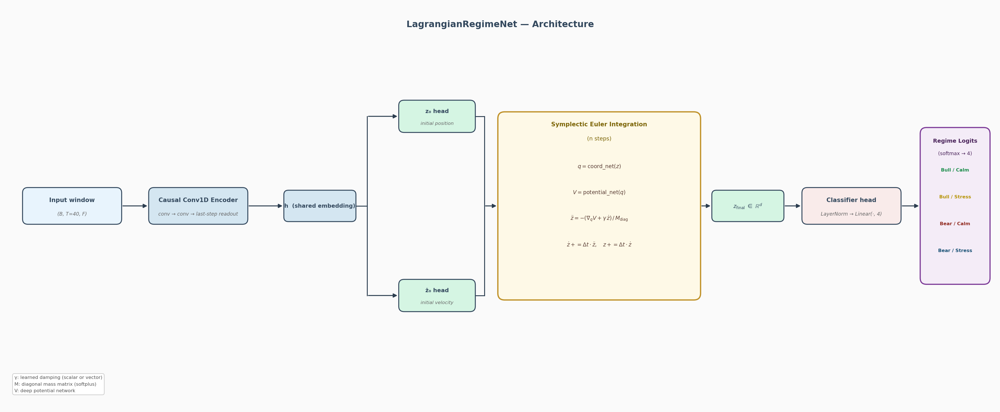

Does imposing Hamiltonian energy dynamics on a latent space produce better-calibrated market regime predictions?
Results
71 walk-forward folds · expanding train window · val = test = 252 days · SPY, QQQ, TLT, GLD, ^VIX · 2004–2026
| Model | Mean Macro F1 ↑ | Mean Brier ↓ | Mean ECE ↓ |
|---|---|---|---|
| ⭐ Ensemble (XGBoost + conv1d) | 0.4046 | 0.5899 | 0.1210 |
| XGBoost | 0.4208 | 0.6246 | 0.1678 |
| LSTM | 0.4062 | 0.6152 | 0.1477 |
| GRU | 0.4008 | 0.6071 | 0.1477 |
| Lagrangian conv1d | 0.3976 | 0.6214 | 0.1473 |
| Neural ODE | 0.3850 | 0.6281 | 0.1450 |
| Lagrangian v3 (MLP) | 0.3700 | 0.6373 | 0.1258 |
Ensemble wins on calibration (best ECE + Brier). XGBoost leads raw F1 but underperforms on early folds due to limited training data. Lower Brier and ECE are better.
Model Design
A 40-day window is encoded into a shared embedding, then split into initial position z₀ and velocity ż₀. A symplectic Euler integrator evolves the state through a learned energy landscape before classification.

Two causal conv layers with left-padding only. Last-step readout. Outperforms flat MLP by +2.8pp across 71 folds.
Velocity-first update preserves the Hamiltonian structure. Potential V and damping γ are both learned from data.
Minimal head on the final latent state. 4-class softmax for BullCalm, BullStress, BearCalm, BearStress.
Three mutually exclusive modes via YAML config. Scalar damping consistently beat more expressive vector variants.
Research Findings
Swapping the flat MLP encoder for causal Conv1D added +2.8pp across 71 folds. Temporal feature extraction matters far more than the physics-inspired dynamics layer.
Probability-averaging XGBoost and Lagrangian conv1d achieves the best ECE (0.1210) and Brier (0.5899). The two models make complementary errors across fold types.
29 econophysics features consistently degraded conv1d by ~2pp while XGBoost handled them fine. Neural encoders need curated, lower-noise inputs.
Every combined experiment (conv1d + multi-horizon + econophysics) regressed. Isolated ablations were the only way to understand individual contributions.
Getting Started
Clone the repo and run any baseline. Market data downloads automatically via yfinance on the first run.
# 1. Create conda environment
conda create -n lagrange python=3.11 -y
conda activate lagrange
pip install -r requirements.txt
# 2. Run XGBoost baseline (auto-downloads SPY / QQQ / TLT / GLD / VIX)
python -m src.training.train_baseline
# 3. Lagrangian conv1d — subset first to verify, then full run
python -m src.training.train_lagrangian model=lagrangian_conv1d +fold_start=20 +fold_end=40
python -m src.training.train_lagrangian model=lagrangian_conv1d
# 4. Compare all experiments
python scripts/compare_all.py --fold-start 0 --fold-end 70 --require-complete-fold-range